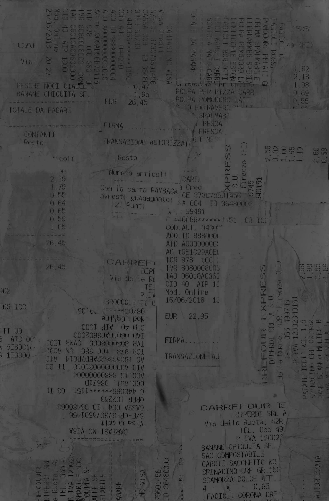

RECEIPTS
Ciao, buongiorno.
Borsa? Do you want a bag?

Carrefour 1
Location:
Via delle Ruote, 44 R, 50129
Firenze
Materials:
Journal entry
There’s something intoxicating about being free to cook for myself in my own kitchen for the first time, something great about becoming familiar with the grocery store down the street, recognizing the cashiers, experimenting and trying dishes until I fall on combinations I love and enjoy making… there’s something adult about that process that is extremely exciting to me as I transition from a child to a responsible person who can support herself. Taking this time to develop life skills like cooking is invaluable, and a prelude to the life I hope for in a city apartment in the future.
Carrefour 2
"Sei Italiana?"
is by far the most classic opening line.
Although it's already obvious I'm not Italian,
or else you wouldn't be asking,
so the whole thing is kind of silly.
I'm still relatively receptive to it, though.
Location:
Via delle Ruote, 44 R, 50129
Firenze
Materials:
Journal entry
I don't think I'll ever forget the man who stopped me in the cookie aisle to ask me where I was from. “Sei Italiana?” When I responded that I wasn’t Italian, but American, he replied in strained English that he knew, he could tell, he knew from the second I passed him. “Italian people never smile like that,” he said. I became aware of how much I make eye contact with strangers and smile at them and how some people have seemed to be legitimately surprised by this. Is friendliness something to be proud of? Or am I just being strange here? I was uncertain if the man’s comment was praise or mild warning, like he was gently letting me know of a faux pas. I’ve continued to smile at people here, and they smile back. It’s already obvious I’m not from here, and I think friendliness is a small way to feel connected to strangers and society as a whole.
"Y tus padres no te echan de menos?"
"Pues, sí, pero asisto a la Universidad
muy lejos de la casa, entonces estamos
acostumbrados a la distancia – y hoy
en día tenemos tecnología como el celular –"
"Sí, pero no es igual verles cara a cara"
Madrid
Location:
Materials:
Journal entry
I sweet talked my way into the design school I’m hoping to spend my junior spring at to go snoop around the campus!! Of course it’s beautiful and an absolute dream. Then I found a nice spot in the shade in Retiro park and took a lovely nap in the grass. Laying my blanket out there, I truly had a moment of feeling like yes – this is exactly what I always hoped my life would be like. Being here for the weekend, sharing my love for this place has absolutely confirmed my decision to come back. I’m truly in love with this city and myself and my own future… which is uniquely uncertain and free in this phase of my life, open in a way it’ll never be again. At what other point in my life will I be able to say I have absolutely no idea what part of the world I’ll be in or what work I’ll be doing two years from now? I guess that can be frightening, and it might be blind optimism and naiveté, but I prefer to think of it as endlessly exciting.
Di dove sei?
America
Be careful with… bag.
Lots of thieves here
Naples
Location:
Materials:
Journal entry
Being in Napoli so far has actually been a kind of surreal experience. I arrived close to dusk, so night was falling as I set out to explore and I could not shake the strangest feeling. Eventually I realized: Napoli, specifically the area I set out to explore first, feels so much like places I have been in my dreams. I think that's for a few reasons combined. Firstly, the city feels like somewhere dream anarchy reigns. There’s trash everywhere on the street, clothes hanging wherever with no regulation, ancient churches smushed next to döner kebab places, graffiti covering EVERY surface, NO observance of traffic laws whatsoever (people just walking in the middle of the road, motorcycles tearing through plazas to get around cars at red lights), children awake and running free everywhere at midnight, people yelling out their windows asking questions of their neighbors up two floors and across the street, families eating dinners in the middle of the street with their one-room apartment doors and windows wide open, maze-like tiny streets, all wires and satellite dishes exposed and stringing precariously between alleys… there was even a point last night at which someone just set off fireworks in the middle of the city and no one seemed to care. But the reason it felt like a dream is because all that did not feel strange to me. It felt totally normal, like how dream logic causes you to accept whatever you experience. This place is thoroughly chaotic, filthy, and electric. It doesn’t feel real because it reminds me so strongly of something like an alternate planet from a sci-fi series. It feels vaguely post-apocalyptic. Like the city of Ember or something. NO, BETTER – it’s Ankh-Morpork from the Discworld series. It feels surreal.
I think I may wonder forever
how past generations ever navigated in strange places and foreign lands
without a cellular GPS function
Amalfi Coast
Location:
Materials:
Journal entry
Sometimes, I decide not to take pictures of things when I feel on a whim that they’re sacred. When something is quiet and beautiful and small and touches me in a special way, I want that moment to be just between my memory and that place, no one else. I want to be the only one to snap that moment and turn it into an artifact before it’s lost forever to time. There’s something magical about that to me. The fact that no one, no matter how close to me, will ever know the entirety of my person - they’ll never know every birch tree I’ve fallen in love with for a moment when I caught it illuminated just right in the evening sun. I’m ultimately alone in this city, in the world, in the universe, and there’s nothing more freeing than that idea. This phase of my life is one four-year love note to myself and my independence.
Deadass fucking majestic
24 Hours in Rome
Location:
Materials:
Journal entry
I don’t think I’ll ever forget the moment I saw Trajan’s column for the first time. It was just there, peering through some buildings – an enormous monument I’d studied in many classes before, so much more monumental in person than I was expecting! That’s how everything is in Rome, I learned, just ancient artifacts of incredible significance next to normal-looking apartments and roads. The SCALE of it all was simply astonishing too. It may have been the rosé hitting me but when I first saw the Italian independence building I really felt as if I had been transported to mount Olympus. It doesn’t hurt that I’ve now had three semesters of college-level western art history to recognize and appreciate these icons. I would’ve walked more but my feet finally gave out at around three and passed out immediately upon lying down in our hostel bed.
"Che lavoro fai?"
"Sono barista."
"Ti piace?"
"Ma, no, perche infatto è un lavoro…"
"Che ti appassiona?"
"Non lo so, sono barista."
"...Come avete conosciuto?"
20 Hours in Bologna
Location:
Materials:
Journal entry
Tonight I met an Italian boy named Gianluca. His hair was so poofy and his eyes were so kind. He kind of smelled like that incense store I walk past close to SRISA’s main campus with his big white shirt with rolled-up sleeves. He reminded me a bit of Amanda Hearn. Zero sexual chemistry between us. Was it the height difference? His friend looked like my cousin Billy -- they ran into each other in the piazza where people were sitting around drinking in groups on a Wednesday night. They bought a few beers from the guy peddling them and they both rolled their own cigarettes. I couldn’t understand them and stood there feeling strange. “Cazzo” is a popular word confirmed. I denied an offer for a beer and eventually I went back to my hotel.